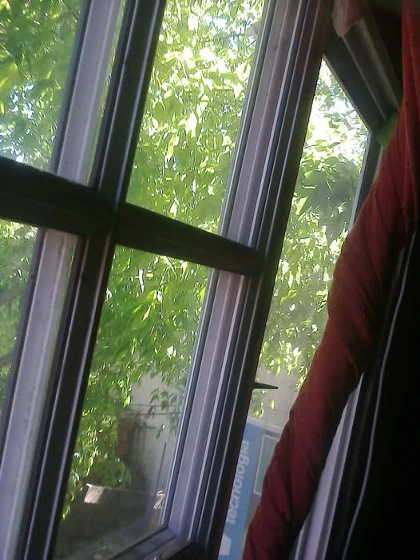

Asthma Mental
Before realizing it, something convenient was born under the banner of the "fight for peace" for the masses to hide a narcotic. One day, fed up with this deception, I decided to write a song that reflected it.
It was 2013. Back then, I had a song that was extremely superficial, typical of hard rock, highly "sexual," and full of sharp criticism—reminiscent of a certain era. I could no longer connect with those lyrics I had written at age 18, well before 2013. Therefore, I decided to turn it into a deeper social critique. That is how "Asthma Mental" (Asthma Mental)—the song dissected here—was born.
Lyrics
Close your eyes,
and unshakeably feel the wild lives
running together
as absolute equals.
Look at the apple tree
on the hill right beside us.
You must be able to see its fruit
shining beneath the sun.
Beneath your feet,
the lush earth is nurtured,
where millions of remains
stare only into silent peace.
I know this sounds far too real,
open your eyes,
this is reality.
What if I told you
that the ground is beneath our feet,
that we radiate light,
and that we can live as equals?
Yet you have been taught
that someone must lose for someone else to win.
Is it really impossible
for all of us to be winners?
Yet you were told
that biting the fruit is a sin.
Are we simply forbidden
even to triumph?
You are afflicted by a disease,
it is a kind of mental asthma.
Suffocating existence, blocking thought,
it is a kind of mental asthma.
Help preach the truth,
by building together we can reach it.
Begin to love all things equally,
and peace will reign across the world.
Listen to the sound
of flowing water.
No matter how you divide it,
it remains one.
Beyond the clouds
the sun still exists,
and behind hatred
love lies hiding.
It is not a utopia,
it is a simple idea.
When you cast away your fear,
it becomes reality.
There is no need to walk on water,
if we share
even a crumb of bread.
What if I told you
that power was always within you,
that we are fundamentally one,
and that to believe is to manifest?
Yet you were alienated by McDonald's and Coca-Cola.
Just how much of the material world
do you claim to need?
Yet you were told
to pay a price for premium air.
Just how much of the material world
do you claim to need?
You are afflicted by a disease,
it is a kind of mental asthma.
Suffocating existence, blocking thought,
it is a kind of mental asthma.
Help preach the truth,
that the path before us can be changed.
Begin to give equally to all things,
and justice will endure forever.
Start singing
in the silence,
start drawing
upon a blank page.
What is that voice lurking within you
thinking about?
Is that you?
Is that me?
I know that salvation
lies within your heart.
It was always there,
only the intention is missing.
No more falsehoods,
no envy, no discrimination,
no violence, no corruption.
Only good intentions remain.
What if I told you
that you can achieve whatever you desire,
that without capital
you can hold what you crave most?
Yet they built
monuments to tragedy.
Is believing in love
truly that unprofitable?
Yet they instilled
dogmas and oppression.
Are we forbidden
even to believe in love?
You are afflicted by a disease,
it is a kind of mental asthma.
Suffocating existence, blocking thought,
it is a kind of mental asthma.
We ought to be worthy of our humanity,
knowing how to love, born as free beings.
Walk through life with sincerity,
and you will find universal love.
Journal Entry — June 25, 2013:
I am still dreaming of musical projects, barely sleeping. It's pure torture. I've recently realized that melodies play even in a state close to sleep. Because of this, about 3 months ago I started recording whatever stayed in my memory onto my phone. If I don't focus immediately upon waking up, it vanishes in under 10 seconds, but doing that in such a hazy state is not easy.
Not everything seen in dreams is deemed "my style" or "viable" for my projects. Therefore, very few things are instantly remembered, utilized, and "hummed" into the phone's recorder.
Over the past month, this concept of dreams has been intense. On a night off, I dreamed lyrics without a melody—or rather, I composed them. When I woke up, it took further shape in my head, and knowing it was an epiphany, I got up in the middle of the night to write it down.
Strangely, the very next day, on my second night off when I thought I could rest... it happened again. I dreamed the melody of the song, fully formed in a completely different way than I had imagined. In my head, it sounded faster, featuring a saxophone, almost like an 80s pop-dance, nearly disco style. In the early hours of that day, I pulled my phone from under the pillow and hummed that recording too.
Having secured an exquisite chorus and a wonderful melody, I didn't know how to express it. I don't play the saxophone, nor do I know anyone who does.
I tried picking out the saxophone melody on a piano and piecing together lyrics for the rest of the song to match the chorus. As for the lyrics, it was a total failure. Days passed, leaving only unsatisfactory phrases and scribbles that were far too aggressive compared to what was intended.
As for the melody, it was great; I picked it out using the keyboard's "piano" mode. After spending hours finishing transposing it by ear that afternoon, I thought: "This is too simple, I'm not convinced. Let's start over with a different song." Then my dad walked in from the kitchen and said: "Hey, is that your song? Wow, that's genuinely good..."
Days went by, and I started hitting a wall trying to figure out the melody for the verses. I vividly remember the exact moment the composition was achieved. Wearing sunglasses, I was sitting on the floor in front of the keyboard. While improvising whatever flashed instantly through my mind, a ray of sunlight pierced through the window onto my sister's bed, filtering through the trees and shining right into my eyes. My hands traced the path my mind carved out, and I began picturing a herd of horses galloping across low scrub plains. Following that, I imagined an apple tree standing on a hill, its fruit shining in sync with the pulsing sunlight. It was as beautiful as the universe's complete love.
That allowed me to structure both the melody and lyrics, though I hit a roadblock because I had to heavily rewrite the words to make them fit. Today, July 3, 2013, I can say the song is complete—though it's still a sketch, and the lyrics are still open to revision. Actually, I finished it last night.
Close your eyes,
and unshakeably feel the wild lives
running together
as absolute equals.
Look at the apple tree
on the hill right beside us.
You must be able to see its fruit
shining beneath the sun.
This is a kind of "vision," or rather a moment of inspiration sparked by the sunlight filtering through the trees. In truth, the only thing I wanted to show was the beauty of the world, fellowship, peace, and love, exactly as they flashed across my mind in a completely natural state.
Beneath your feet,
the lush earth is nurtured,
where millions of remains
stare only into silent peace.
I know this sounds far too real,
open your eyes,
this is reality.
What if I told you
that the ground is beneath our feet,
that we radiate light,
and that we can live as equals?
It continues the concept of "pure nature," but takes it a step further by incorporating death as part of life—perhaps as a continuation on a higher, more conscious dimension. There, existence is merely a fragment of the whole, defined solely by being alive.
Next comes the realm of the song's objective: showing that all those things which exist in the mind, sounding beautiful and seemingly like a delusion or a child's fantasy, are completely real and existent. In fact, they are precisely where we live, yet we continually ignore them.
Yet you have been taught
that someone must lose for someone else to win.
Is it really impossible
for all of us to be winners?
Yet you were told
that biting the fruit is a sin.
Are we simply forbidden
even to triumph?
The foundational premise of the song "Asma Mental" speaks to how governments, monarchies, and the interests of a select few have led us into an isolated collective psyche, plunging us into a state where we can neither thrive independently nor discover the core of our own existence. Naturally, several elements have been manipulated or altered over centuries. Beyond political and economic spheres, they primarily utilized psychological and emotional traits, setting up behavioral traps. This is demonstrated three times in different forms right before the chorus.
As seen in the first form, it explains how humans were educated through a sort of game-like method: "You're bored? Let's play. But to win, you have to step on someone else's head. The fewer winners, the lower the losses." Mind you, I am not talking about the famous Mesoamerican ballgame Pok-ta-tok where you had to pass a ball through a small stone hoop; I am talking about human history as a whole. It has likely shifted forms to match the demands of each era and modern ambitions. Today we see it in soccer, tennis, baseball, basketball, and video games. We must compete at work and in life. Not everyone can win—that is the exact result they achieved through their games. In fact, there are war video games and physical games like paintball, where killing others is framed as entertainment and the sole condition for victory.
Expanding further below, it shows that it wasn't just governments or monarchies that suffocated us, but religion as well. In other words, back then they all operated in cahoots; monarchs sought advice from the church while issuing commands, both reaping mutual benefits and keeping the populace under control through faith. Whenever someone grew dissatisfied with royal rule, crop yields, heavy taxes, or pointless wars, a sacred duty was simply drilled into them.
I've debated this point several times, and people get mad: "You can't even enjoy things that way, without rivals it would be terribly boring." My dear, foolish brothers: humans created space shuttles, virtual tech, artificial intelligence, telecommunications, modified food molecules, cloning, and systems that force you to read text with completely unnecessary visual flourishes no matter where you sit—yet despite all the philosophical schools, game developers, and thinkers in the world, people claim we cannot invent new forms of play? Healthy formats where individualistic behavior isn't rewarded?

You are afflicted by a disease,
it is a kind of mental asthma.
Suffocating existence, blocking thought,
it is a kind of mental asthma.
Here lies the lyric and melody born from the dream—the very origin of the track. It explicitly warns that we are being forced into specific frameworks, forbidden from exercising reason, unable to act for ourselves or as ourselves, and conditioned to think solely to line someone else's pockets.
Help preach the truth,
by building together we can reach it.
Begin to love all things equally,
and peace will reign across the world.
True to form, I offer an alternative like a recipe, because nowadays nobody wants to take the effort to figure out how to solve things on their own. Here I clearly state what I want and how I try to achieve it: specifically, that we don't need to step on each other's heads, that we can build the present and future together, and because each exists for all and all for each, there is no need to prioritize love toward select entities. By eliminating competitive self-interest, the world will finally know peace. And the peace I speak of isn't merely physical; it is linguistic, mental, spiritual—every kind of peace that crosses your mind.
Listen to the sound
of flowing water.
No matter how you divide it,
it remains one.
Repeating a concept introduced in other songs: we are all one. The same applies to the world and its lands: "Even if you divide it into hectares, sell it to someone, and plant a flag... the Earth remains the Earth in its essence, divided only inside your mind."
Beyond the clouds
the sun still exists,
and behind hatred
love lies hiding.
We choose whether to look at good or evil. As the saying goes, "Every cloud has a silver lining"... in truth, evil does not exist; there is only nature. Clouds roll in; things might look inconvenient to us, but the sun is still up there in the sky. In nature, there are no slumps or bad moments—only our own interests temporarily clouded, with our egos playing the victim. The sun will undoubtedly rise again. And if a person exercises reason, they can learn many things through such eclipses, just like the ones outlined in this paragraph.
Behind hatred, love lies hiding... exactly. We all love. I explained this in "Sra. Pivs": deep inside, we love and nothing more. Socio-psychological and cultural structures shape us to adapt our interests and satisfy our fulfillment within a completely distorted environment. Life experience and setbacks drive many to extreme selfishness, violence, and sadomasochism. I could list countless horrors humans are capable of, and you know them all. Yet, past that tangled forest, behind all that hatred—behind what many call "bastards" or "terrible people"—at the very root, where the seed sprouted, love still lurks, suppressed for a lifetime in most cases.
It is not a utopia,
it is a simple idea.
When you cast away your fear,
it becomes reality.
There is no need to walk on water,
if we share
even a crumb of bread.
People who heard my previous song, "Paz (mi ideología)," went so far as to say: "What you're saying is wonderful, but what you're asking for is too hard." That annoyed me. I live it out—where on earth is it hard? I spent sleepless nights pondering it, but people genuinely believe that what I'm proposing is a "utopia." It’s not a damn utopia; it’s just an idea.
Imagine a robotic society without religion. I walk in and say: "Folks, an almighty God created the world in 6 days and rested on the 7th. Then a virgin conceived through the Holy Spirit, and a guy built an ark with two of every animal for the greatest flood in history—like Kevin Costner in Waterworld. Then a prophet multiplied bread and pulled wine from his veins. You must love him." Wouldn't those robots call that completely unrealistic? Yet in real modern life, there are thousands of such gods, and people manage to believe in Krishna, but won't listen to what I'm expressing.
Thanks to those beliefs, material structures like churches were built; people go to church on Sundays seeking love and fellowship, confessing sins, trying to be better, and handing out food in God's name... Doesn't that sound like a utopia? Now imagine telling animals: "Listen, one of you is going to sit in that house while the rest go out to work. We'll divide labor by species, and capitalist-worker relations will exist solely on surplus value." You'd think: "What on earth are you talking about? Did you watch The Lion King?" Yet we used to be pure nature just like the animals, and now we build parliaments, organize governments, and erect hubs of international webs and economies. We built reality out of an idea.
So why can't "love equally"—something as entirely natural and inherent to us as being born—be called reality? I know, people will still accuse me of forcing magical realism. But what I'm proposing is far simpler and more natural to our existence than the absurdity of the bureaucracies we live under.
And I remember people always asking: "If you can criticize so much, how would you do things differently?" I am neither a politician nor an economist, nor do I care to be. But if one cannot find an alternative to something so simple and obvious, they are a fool. People don't act because they no longer believe. They've been taught that historical heroes (who knows how killers become heroes) and holy figures can move mountains, but you can't. So people resign and give up. And that is precisely what I'm trying to change in this section. I am telling them: you don't need to walk on water like Jesus Christ or magically multiply bread.
If everyone contributes just a tiny fraction of solidarity—something as microscopic in daily life as a crumb of bread—the world will undergo a dramatic transformation, whether you believe it or not. But it’s useless if we all hide behind rocks out of fear, because while my breadcrumb can feed someone, comparing my personal effort to the collective results of all humanity is impossible. I know my effort won't be in vain because a single wave of goodness can shift the tide. But the scale of what the entire ocean can achieve is unimaginable.
What if I told you
that power was always within you,
that we are fundamentally one,
and that to believe is to manifest?
Power belongs to the people, to the masses; you possess the capacity to transform circumstances. You are merely made to believe you have been stripped of that power through fear and dependency on the system. If you realize you do not depend on them and that they are entirely obsolete, you would move things in a different way—one that doesn't line the pockets of those in power.
As for the rest, it has already been explained in the points above: to believe is to manifest, and believing in a truth—temporary or not—makes it your reality.
Yet they built
monuments to tragedy.
Is believing in love
truly that unprofitable?
Yet they instilled
dogmas and oppression.
Are we forbidden
even to believe in love?
Here, part of the phenomena analyzed earlier is shown. They fabricate a miserable, inescapable world where capitalist obligations feel mandatory. They build monuments to tragedy while pretending to work for themselves and for you. This includes not only physical monuments, but also films about La Noche de los Lápices (The Night of the Pencils), Pinochet, Vietnam, Hiroshima, JFK, MLK, John Lennon, and Che Guevara.
They re-raise these memories to remind us of the fate awaiting rebels, independent thinkers, those who try alternative paths, and those who refuse to serve economic interests. Control is forged this way. Because the idea of peace, fellowship, and everyone winning and treating each other as equals means fracturing the world.
Human ambition won't allow it. There are those who want everything and demand more. The fewer people there are to share with, the better it suits them. Dismantling hierarchies yields no profit for those in power; it would shrink their banquets, reduce state coffers, gold reserves, and Chinese-manufactured clothing. But supporting egalitarian thinking—is that truly beneficial for all of us?
This is how we have been manipulated, and I will repeat it to you as many times as necessary. As you can see, they sowed dogmas and oppression among us—that is what they did. Slavery vanished, abolished in 1813. People celebrate: "How wonderful!"... But anyone who has read Open Veins of Latin America understands that keeping slaves is actually more costly and inconvenient than adopting starvation-wage systems like the ones we face today. And that is blindingly obvious. The system simply adapted to suit their convenience.
We gained more rights, but certain rights are respected not because dictators found a conscience or military juntas left behind a progressive social paradigm as a byproduct, but because it is an advanced form of market control. And the market decides who wears the crown and who holds the mop. Who wears the crown implies who is manipulating the world at will against the populace, as if playing a game of Risk (T.E.G.). That is the very essence of war.
You don't need to live under a dictatorship to be dominated or placed in a state of war, to be taken hostage, or to cede positions out of fear of ETA's terrorism. They control us psychologically. They have analyzed our desires for years and profited from them. Humans need answers, born from our search and inquiry. It's like an essential craving. They exploited all of that and sold us simple answers. When we were starving, they handed us stone soup; and convinced our search was over, we followed dogma to learn how to make that "stone soup." According to them, it meant working in copper, iron, and gold mines, offering it to the king, and handing over the harvest so we could partake in the delicious stone soup.
Yet here I stand, telling you: don't be a fool. I've been saying this for a long time. I've debated endlessly, paying the price of having no friends and possessing nothing. People love me, but they don't understand me. Like Pontius Pilate or the mob facing Jesus Christ, they throw stones at me and accuse me of blasphemy. I am the man who escaped the cave, and following the allegory of the cave, I am telling you to stop looking at those shadows. I know I will likely be killed in the end, but I hope this message genuinely reaches the consciousness of a few.
You are afflicted by a disease,
it is a kind of mental asthma.
Suffocating existence, blocking thought,
it is a kind of mental asthma.
Help preach the truth,
that the path before us can be changed.
Begin to give equally to all things,
and justice will endure forever.
Here it is shown that all is not lost, and without giving up, we can spark change. We can be fair. Simply surrendering and giving with the certainty of receiving equally—in every aspect and sense, not just economic—is how justice automatically functions, establishing an autonomous scale of justice.
Of course, this way of living must be practiced for a long time. Nobody wants to do it because we know practically nothing comes back in return. In other words, many of us continue giving with little reward other than the fulfillment of fighting for a better world... but that alone isn't enough for everyone.
If everyone tries to change at some point, even if not immediately, future generations will see it as natural. The balance between giving and receiving will be maintained, and the abyss between self-interests will cease to exist.
Start singing
in the silence,
start drawing
upon a blank page.
You can build infinity out of nothing; nothing constrains you, and no pre-established structures exist. In other words, even from the very bottom, you can reach whatever direction or ambition you desire. No solid foundation or capital investment is required; you can start possessing nothing. In fact, creation itself arose from nothing, and original ideas simply sprout from a void. Anything else is just a reconstruction of the same phenomenon—a cover version.
This paragraph also urges you to enjoy that state. You might find yourself in the solitude of silence, feeling lost. But silence or a blank page symbolizes precisely that—the infinite possibilities in your hands, the fact that you can choose how to shape your life, your plans, and practically everything else.
What is that voice lurking within you
thinking about?
Is that you?
Is that me?
Most creations, works, and art induce a sort of trance state in people. When we snap out of that dreamlike daze, we exclaim: "Whoa! What an amazing thought..." and immediately place ourselves back in another world, feeling like third-party observers isolated from such thinking.
What I am doing here is prompting you to think. "Did you like what I said? ...Well, you're the one listening to it. Try observing the part of you that is thinking. Is it the physical body, or is it 'existence' itself? ...These are my words inside you, but you are the one rationalizing them. Is that me inside you, or is it both of us?" Part of this description is inspired by Deepak Chopra's The Way of the Wizard.
I know that salvation
lies within your heart.
It was always there,
only the intention is missing.
Did you like what my songs talk about? Do you wish the world were like that? ...Then it is always inside you, residing in your heart. No matter who you are, what process shaped you, or what social role you play, loving is embedded within your very existence. Everyone somehow wants the world to be better, yet nobody even tries. Therefore, I state clearly: all that is lacking is intention. Nobody even attempts it anymore. It's the classic resignation I mentioned earlier.
Why do we give up, you ask? ...Everything is designed to make us give up. It's a kind of Pavlovian conditioning, like the stimulus-response law. Thus, by failing to empirically achieve desired outcomes, we transition to a stage of drawing self-imposed conclusions and never trying again. In this case, never trying to change the world again, never trying to do good.
No more falsehoods,
no envy, no discrimination,
no violence, no corruption.
Only good intentions remain.
I ran a little "interview" with a small group to find out what a "perfect world" looked like in their minds. I reflected here the elements they brought up that felt most universal to social philosophy and my own thought. I considered adding a line about machismo, but decided the word "discrimination" covered it. Some words were swapped for different expressions, but the intent was precisely to show that not only my desires, but what everyone desires, can be achieved, and the world is open to any possibility and factor.
What if I told you
that you can achieve whatever you desire,
that without capital
you can hold what you crave most?
One of the most universal opinions shared with me was a detailed list of items and events that could be bought or achieved with money, such as going on trips or owning specific objects. This is one of the propositions I raise.
"What if you could have them without money, since those things weren't created by money in the first place...?" This question makes you reflect on the very system you are immersed in, and how much humans are stripped of just to get its meager benefits and excessive oligarchic obligations.
Yet they built
monuments to tragedy.
Is believing in love
truly that unprofitable?
They fabricated memories, instilled fear, alienated us, and drilled education and resignation into us—just as I've repeated over and over... Why do I say "monuments"?... Roca, Rosas, soldiers on the battlefield, the Falklands (Malvinas), and the famous monuments and banknotes of La Noche de los Lápices. These exist purely to maintain fear among the populace, showing the consequences of fighting for ideals, scaring us into believing we lack power, instilling powerlessness, and driving us to crave class structures and state control.
Just as with peace, it is obvious that believing in love is unprofitable (doesn't generate profit) for everyone. For the ruling class, it's convenient to introduce a competitive market and cement social classes and the bourgeoisie. Therefore, while they allow you to believe in many things other than love, they pull every string to ensure that "love" as a lifestyle, a form of governance, and a way of living in society does not function.
If you think my definition of "love" refers to a romantic relationship between two people, please stop reading this long text right now. That is just one form of "love" drilled into us, and after all the discussions in my past works, you should already realize that.
Yet they instilled
dogmas and oppression.
Are we forbidden
even to believe in love?
Just in case it only seemed like a few instances, governments aren't the only ones doing this. Monarchies used to do it, relying on church power... One of my core arguments is that they relied on creating "dogmas" precisely to establish order among the masses.
Examples of oppression no longer need listing. Dictatorship, war, deaths at protests, government attempts to censor media—we are surrounded by them. You don't need a media studies expert to spell it out: "Hey, you're being hammered with subconscious messages, dogmas, oppression, resignation, and conditioning based on the hypodermic needle theory."
I ask you once again: are we forbidden even to believe in love?... Even most doctrines shoved down our throats talk partly about love. But nobody looks at that part; they just toss it around as buzzwords and never put it into practice.
The final part where I cry out "Love" twice is inspired by the vocal melody in John Lennon's "Oh Yoko!"
You are afflicted by a disease,
it is a kind of mental asthma.
Suffocating existence, blocking thought,
it is a kind of mental asthma.
We ought to be worthy of our humanity,
knowing how to love, born as free beings.
Walk through life with sincerity,
and you will find universal love.
This is the ending of the song, and personally, my favorite part. No need to explain the contents; in fact, I expressed it rather crudely.
As for the phrase "universal love," it has a fascinating backstory. I pulled this phrase from a dream about my grandmother passing away. In the dream, I went to visit her, and she sat up from her futon. I told her: "Don't scare me, are you okay?" and she nodded affirmatively... Dad didn't want to look at her, saying she was already dead and this was her second death. The shock made him give up on accepting it.
So I looked at her and asked during the last seconds of the dream: "Do you feel universal love?"... She smiled faintly and replied, "Yes." Her expression looked like universal love—something the human body can never fully comprehend, as if she had become part of the "whole."
I woke up with tears in my eyes, thinking my grandmother had truly died, though I would meet and hug her a few times after that... But those words and that beautiful feeling stayed in my heart.
Universal love felt like something eternal to life, something we form a part of without realizing it. It's like a single consciousness, a singular God-like entity existing everywhere, neither thinking nor holding opinions, simply being—because it resides within every existing particle. And if you drift within that existence, you become part of an omniscient "whole" that sees all and can become all. You transform into true peace and universal love itself.
Some of the few criticisms I've received argue that the song is too long and contains too many ideas to ponder, making it hard to understand. Because of this, suggestions were made to split it into three parts and scatter them across the album, but I'm not convinced. I want it to stand globally as one of the greatest peace and love songs in history.
Writing completed: July 9, 2013.